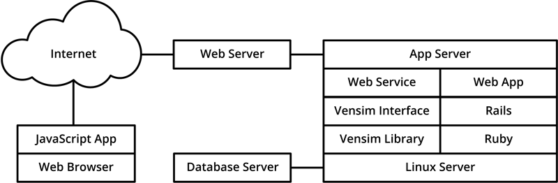

Purpose
Energy Innovation LLC chose to develop a web-based interface to improve the accessibility and reach of the Energy Policy Simulator (EPS). Much of the power of the EPS comes from the way it allows users to explore many different policy packages in real time, learning about the available options and their effects on emissions, costs/savings, and other outputs. Without a web-based interface, this would only be possible for users who download and install Vensim Model Reader, the free software used to run the EPS on one’s own computer, as well as the EPS itself. We wish to provide the opportunity to interact with a running copy of the model even to users who might not have the time, inclination, or technical expertise to install and learn how to use Vensim Model Reader.
The other purpose of developing the web application is to provide an improved user interface and expanded model capabilities. For example, policies have helpful descriptions and guidance text, switching between graphs of different output variables is fast and intuitive, and editing policies’ implementation schedules is easier in the web interface. There are also some features not available in the downloadable version of the EPS. Most importantly, “wedge diagrams” (which show the contribution of each policy to the change in a particular output variable) and abatement “cost curves” (which show the abatement and cost-effectiveness of each policy) are produced by the web interface using multiple model runs and cannot be seen within Vensim Model Reader. Some other added features include the ability to display tagets on graphs (for instance, to visualize a proposed or enacted emissions reduction or clean energy target), the ability to share scenarios by email or social media, and quick and convenient downloads of data for output graphs and associated policy settings. For most users, we believe using the EPS through the web-based interface will be faster, easier, and more intuitive than it would be using a local copy of the model.
Limitations
The online interface does not contain as many features and options as Vensim Model Reader. This limits the ways in which users can interact with the model, if they do not download the local version of the EPS. Some of the most important limitations of the online interface are:
- Users cannot view output from every variable in the model. They may only view output from the (very large) number of variables that are configured for graphical output in the web interface. See this list of output graphs available through the web interface.
- Users cannot examine the model structure, equations, and input data.
- Users cannot edit the model or input data.
- A few policy levers and control settings (such as a toggle between 100-year and 20-year global warming potential timeframes) are not available in the web interface.
None of these limitations exist in the free and open-source version of the EPS that may be downloaded and run locally. If you expect to do any of the tasks above, you are encouraged to run the EPS on your own computer. Please see the Download and Installation Instructions for details.
Web App Architecture
The online interface is a web application developed by Energy Innovation in the Ruby programming language. It interfaces with a 64-bit, multi-context (multi-user) version of Vensim that is running on a server. Each time a policy lever is changed, the web app sends the relevant changes to Vensim, instructs Vensim to run the model, obtains data for relevant output variables, and displays the data onscreen. User scenarios are saved as combinations of policy lever and implementation schedule settings in a database, under a particular user’s account (if that user has signed up for an account). The web app reads settings from the database and requests new model runs from the Vensim library as needed. The “reference scenarios” included with each EPS region’s model have their results pre-cached and ready to display without the need for model runs.
The following diagram shows the high-level, technical architecture of the web application and associated components:
